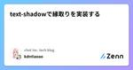
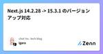
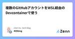
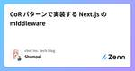

chot Inc. tech blogのフィード
https://zenn.dev/p/chot
ちょっと株式会社（https://chot-inc.com）のエンジニアブログです。 フロントエンドエンジニア募集中！ カジュアル面接申し込みはこちらから https://chot-inc.com/recruit/iuj62owig
フィード

text-shadowで縁取りを実装する
chot Inc. tech blogのフィード
文字の縁取りを実装する場合、 text-stroke や SVG などいろいろな方法があると思います。今回は text-shadow を使った方法を紹介します。 text-shadow を使うケース一般的な縁取りは text-stroke と paint-order を組み合わせた方法で対応できると思います。ただ複数色の縁取りをしたり、縁取りした文字に影をつけたいときにしたいときは、 text-stroke の方法では難しいと思います。こういったケースの解決策の一つとして、text-shadow を使った方法について紹介していきたいと思います。 text-shadow...
2日前

Next.js 14.2.28 -> 15.3.1 のバージョンアップ対応 1
1
chot Inc. tech blogのフィード
モチベーションCVE-2025-29927によるNext.jsのMiddlewareでパッチバージョンの脆弱性対応してたのもあり、14 -> 15にあげようとする対応は並行して検討してた脆弱性対応前から npx @next/codemod@canary upgrade latest によるマイグレーションですんなり15にアップできないか気になっていたのもある数ヶ月に1回はcodemod実行してみるぐらいは気になってた手作業的に変更しないといけない箇所が多くすぐには対応できんとなりだいぶ見送ってたがcodemodが改善されていき、自動で更新できるようになってきて...
5日前

複数のGitHubアカウントをWSL経由のDevcontainerで使う 1
chot Inc. tech blogのフィード
Webエンジニアの4096mgです。複数のGitHubアカウントをWSL経由のDevcontainerで使うときに設定していることを備忘録として残しておきます。仕事用と個人用で複数のGitHubアカウントを使い分けたいという需要は大きいと思いますが、Windowsに対応した情報はあまり見つからず、Devcontainerがどの認証情報を参照するかもわかりにくく、ハマりやすいポイントだと思います。WindowsではWindowsからそのままGitHubに接続したいときWSLからGitHubに接続したいときWSL経由のDevcontainerからGitHubに接続したいとき...
12日前

CoR パターンで実装する Next.js の middleware 1
chot Inc. tech blogのフィード
GoF が提唱したデザインパターンのうち、 Chain of Responsibility パターン(以下、CoR パターン) というものがあります。責任の連鎖とも訳されますね。CoR パターンはその名の通り、チェーンに見立てて処理を複数の関数へ順々に回していく仕組みです。自分の関心事ではないと判断したら、次の関数に処理をバトンタッチしていきます。良い面としては処理の追加・変更・削除などが比較的容易で、関心事に集中しやすくなります。難しい面としては、処理がストップした場合にエラーの原因を追うのが少し大変だったり、常に処理する順番を意識する必要があります。CoR パターン自体の説...
13日前

SvgIconコンポーネントでアイコンを一括管理する
chot Inc. tech blogのフィード
概要Vue.jsでSVGを表示するコンポーネントを作成する際に、アイコンごとにコンポーネントを作成するとアイコンの数が増えた時にコンポーネントの管理コストも高くなってしまうため、以下のように1つの汎用的なコンポーネントでまとめて扱える仕組みがあると便利です。<SvgIcon icon-type="hoge" :size="sm" class="bg-red-500"/><SvgIcon icon-type="foo" :size="md" class="bg-blue-500"/>今回はCSSのmask-imageプロパティを使用して、上記のように実装...
1ヶ月前
requestAnimationFrameを使ってアニメーションを作ってみる
chot Inc. tech blogのフィード
ちょっと株式会社でフロントエンドエンジニアをしているでんです。業務の中でrequestAnimationFrameに触れる機会がありましたので紹介できればと思います。 requestAnimationFrameとはwindow.requestAnimationFrame() メソッドは、ブラウザーにアニメーションを行いたいことを知らせ、指定した関数を呼び出して次の再描画の前にアニメーションを更新することを要求します。このメソッドは、再描画の前に呼び出されるコールバック 1 個を引数として取ります。https://developer.mozilla.org/ja/docs/We...
1ヶ月前
フレームワークのアップグレード作業を計画的に進めるための手順
chot Inc. tech blogのフィード
Next.jsを14系から15系に、Reactを18系から19系にアップグレードする作業をしていて感じたのが「計画的に進めないと、見通しがつけられなくてしんどいな」ということ。最初は計画もなく一気に進めようとしていましたが、状況が把握しきれなくなり、情報を整理してから別ブランチでやり直すことになりました。原因としては、色々なことを試しているうちに、何をしたからうまくいって、逆になぜうまくいかないかが把握できなくなったこと。そして、レビューに出す前の最終確認がとてもやりにくいと感じましたし、整理されていない状態だとレビュアーの負荷がかなり上がってしまいます。フレームワークのアップグ...
1ヶ月前
MDX 内の画像を Astro の Picture コンポーネントに自動変換する remark プラグインを作る
chot Inc. tech blogのフィード
モチベーションAstro で Markdown に書いた  形式のローカル画像は、自動で webp に変換される。しかし私は特定のパスにある記事だけ画像に quality を指定した上で picture タグにしたかったので、今までは下記の記事を参考に、img タグを探して自力で picture タグへ変換する rehype プラグインを作成・使用していた。https://zenn.dev/pompompudding/articles/1a8d8d54fe7823しかし MDX の使用を前提とすれば、すべての img を Astro の P...
1ヶ月前
AIに頼ってライブラリ依存度を下げる試み
chot Inc. tech blogのフィード
はじめに仕事の中で小さなCLIツールを作る機会がありました。スピナーや対話型UIが欲しくなり、使えそうなライブラリを探そうと思ったものの、小さなツールなのでそこまで機能性が高いものは必要なさそうでした。AIに頼ればライブラリに依存しすぎることなく、小さくシンプルに作れるのではと思い試してみました。ライブラリへの依存を減らすことで、サプライチェーン攻撃のリスクを抑えたり、ライブラリの非推奨化や破壊的アップデートの影響を抑えることで、メンテナンスの手間を抑えたいというモチベーションです。 作ったもの実験台として PokéAPI にCLIでアクセスするツールを作ってみました。h...
2ヶ月前
GitHub Actions をローカルで実行！ nektos/act の紹介
chot Inc. tech blogのフィード
はじめにGitHub Actions を使っている方は多いと思います。新しいワークフローを作るとき、GitHubにpushして動作確認しなければいけなくて、手間が多いですよね。そこで、 nektos/act を使うと、自分のマシン上でワークフローを実行できます。公式サイトによれば、Fast Feedback: コミットやプッシュなしで動作確認ができるため、開発効率を向上させる。タスクランナーとして利用: make やシェルスクリプトのようなタスクランナーの代替として使うことも可能。というわけ。▶ GitHub: https://github.com/nektos...
2ヶ月前
satisfiesでmetaの型を定義したstorybookのファイルでtsのエラーが起きる
chot Inc. tech blogのフィード
はじめにNext.jsでStorybookを使用し、satisfiesを利用してmetaの型定義を行った際に、以下のエラーが発生しました。Expression produces a union type that is too complex to represent.このエラーが発生した状況と、その解決方法について解説します。 エラーが出た時の状況Next.jsのpage.tsxが106個を超えたあたりからエラーが発生。106個という数に特に意味はないと思われる。ページを追加するとエラーが発生する。ページを削除するとエラーが起きない。satisfiesを...
2ヶ月前
react-callで実装する確認モーダル
chot Inc. tech blogのフィード
はじめにWebアプリケーションにおいて、ユーザーが重要な操作（データ削除など）を行う前に確認を取るケースがあります。この確認フローをモーダル等を使って実装すると、モーダルの開閉状態をstateで管理する必要があったりと実装が複雑になりがちです。今回は、react-callを活用することで、確認モーダルの実装を簡潔に行う方法を紹介します。 react-callとはreact-callは、Reactコンポーネントを手続き的に処理できるようにするライブラリです。react-callに関してはこちらの記事が参考になります。https://zenn.dev/ykicchan/ar...
2ヶ月前
ドメインを変えたらサービスが繋がらなくなったと言われた件
chot Inc. tech blogのフィード
Intro弊社で開発しているサービスの、ドメインを変更することになったときの話。すでに旧ドメインで一部顧客に利用していただいていたため、旧ドメインは破棄せずに新ドメインにリダイレクトさせるようにしました。DNSの設定やコードをいくらか修正し、リリースをしました。Webアプリを触って画像が表示されたりデータが取得更新できたりと、通常通り使えることを確認して一安心していました。 問題発生すでに使っていただいていた社外ユーザーから「画像が表示されない」と連絡がありました。スクリーンショットを見るとたしかに画像が切れてALTテキストが表示されていました。しかし同じ画面を自分のP...
2ヶ月前
Roo Code + GPT-4o mini + Raycastで翻訳機能を作ってみた
chot Inc. tech blogのフィード
はじめにこんにちは！普段はQAエンジニアとして働いているRaBitです。今回は、Roo Code、GPT-4o mini、そしてRaycastを組み合わせて、日英翻訳ツールを作った話をシェアしたいと思います。💻✨ 翻訳ツールを作るきっかけエンジニア業務だけでなく、オンラインの友人とのやり取りなどでも日本語と英語を行き来する機会が増え、ブラウザやアプリを開いてDeepLやGoogle翻訳にアクセスしてコピペする手間が地味にストレスになっていました。もっとシームレスに翻訳できないかな〜🤔と思いRoo Codeの力で自分好みの翻訳ツールを作ることにしました！ 使用技術の紹介...
3ヶ月前
新規開発時のおすすめ設定やライブラリ
chot Inc. tech blogのフィード
はじめにnpx create-next-app@latestなどの直後にすべきおすすめの設定を紹介します。もちろん途中から導入もOKですので、気になる項目があったら試してみてください。 pnpmでscriptsを統一するpnpm とは、JavaScript パッケージマネージャです。パッケージのインストールが高速な事や、便利な機能が多数あります。その中でおすすめの機能が、Running multiple scriptsです。以下のpackage.jsonの場合pnpm lintを実行する事で、lint:から始まるscriptが実行されます。package.json{...
3ヶ月前
CDNで読み込んだライブラリもtype safeに扱いたい
chot Inc. tech blogのフィード
こんにちわ、hanetsuki です。この記事は、htmlファイルに<script />を用いてにcdnやその他ライブラリを読み込んだ際にエラーになってしまうケースがあったので、その時の解決忘備録です。npm経由ではなく、CDNで読み込まなければならない制約があるケース...ありますよね（？） やっぱりTypeScriptで書きたい私は、TypeScriptが好きなので限りなく利用したいと考えています。しかし何も対させずにVueを扱おうとするとエラーで怒られます。index.html<script src="https://unpkg.com/vue@...
3ヶ月前
Astro 5.0のServer Islandsとは？特徴と実践的な活用方法
chot Inc. tech blogのフィード
はじめにこんにちは！フロントエンドエンジニアのかこなーるです！フロントエンド開発の進化とともに、ウェブサイトやアプリケーションのパフォーマンスと効率性に関する課題も増えています。特に、クライアント側のJavaScriptの負荷が増えることで、ページの表示速度が低下し、ユーザーの体験への悪影響や離脱率の増加を及ぼすことが懸念されています。Astroは、こうした課題に対応するために、静的サイト生成（SSG）をベースとした軽量なフレームワークとして人気を集めてきました。そして、最新のバージョン5.0では、新たにServer Islandsという機能が導入され、さらに高度なサーバーサイ...
3ヶ月前
Hugo で Tailwind CSS を使うための設定
chot Inc. tech blogのフィード
まえがきかつて静的サイトジェネレータの Hugo で Tailwind CSS を使おうとするとうまくいかないことがありました。たとえば hugo server で起動中、新しいクラスを付けてホットリロードしたのに見た目が反映されない……ということが、Hugo だと容易に起こります。また、それを解決するための設定は一筋縄ではいきませんでした。しかし最近改めて調べてみたら、去年 Tailwind CSS のためだけに新機能が実装されていました。現在はそう複雑ではない設定で Tailwind CSS を快適に使うことができますので、今後 Hugo を使う方にご紹介したいと思いま...
3ヶ月前
Lingui で実現するモダンな多言語対応
chot Inc. tech blogのフィード
はじめに 🚩よくある i18n ライブラリでは翻訳辞書を用意し、翻訳キーを元に翻訳対応を行いますが、Lingui では、コードベース内で実際の文言を直接記述し、それを翻訳対象として抽出できます。つまり、先に翻訳辞書を用意するか、先にコードベース内で文言を記述するかといった違いがあります。後者のこの特徴により、翻訳キーの管理が不要になるといったメリットがあります。さらに翻訳作業を効率化、自動化できる機能も提供されており、翻訳作業のコストを削減できると感じます。この記事では、このような特徴を持つ JavaScript 向けの国際化（i18n）ライブラリ Lingui を使用して...
3ヶ月前
gitのデタッチ状態について具体的な活用例を考える
chot Inc. tech blogのフィード
はじめに初心者はgitでデタッチ状態を避けろと言われます。実際にデタッチ状態について調べてみると、避けるべきものとして書かれていることが圧倒的に多い気がします。そこでふと、逆に活用することはあるのかと疑問に思ったのが今回の記事のテーマです。概要をおさらいした上で、活用パターンについてはChatGPTに挙げてもらい、避けるべきと思われがちなデタッチ状態を、逆に活用する例を解説します。 デタッチ状態についてのおさらいデタッチ状態とはブランチがない状態のことです。…と記事に書かれているのを見かけますが、正確にはブランチ以外にHEAD（現在地）がある状態のことです。英語では...
3ヶ月前